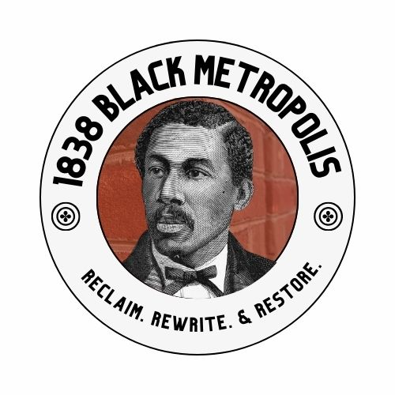

This is the same tour as the full walk, built for a smaller loop and a group that may not want to stand for long. Short walking distances, a seated interpretation point wherever possible, fewer stops with richer stories, and terrain conditions stated plainly at the start. The people who open Eden’s story, Celestine Cromwell and Martin Lehmann, are introduced at the parking area rather than at their sections.
| Tour at a glance | |
|---|---|
| Length | 60 minutes |
| Audience | General audience; limited-mobility audience |
| Starting location | [TBD] To be confirmed |
| Ending location | [TBD] To be confirmed |
| Stops | 3–4 |
| Walking level | Limited walking. Portable chairs welcome and suggested. |
| Content advisory | Discussion of grave disturbance, racism, and reinterment |
| Guide materials | Printed route sheet, section map, timer, emergency contact |
Three tiers of content. Every line in this script sits in one of them.
Burial-status tags. Say the distinction aloud; it is the teaching device of the whole tour.
| Tag | Meaning |
|---|---|
| Transferred | Moved to Eden with an earlier cemetery (Lebanon 1903, Olive 1923, Stephen Smith Home 1903). |
| Direct Eden burial | Buried at Eden after the section was established. |
| Remains now elsewhere | Former Eden interment or memorial; the remains have since been moved. |
| Sequence unconfirmed | Burial history still needs confirmation in Eden’s records before it is said aloud. |
Guide cue. Welcome visitors at the parking area. State the tour’s length and actual terrain, then point out the Richard Allen and Lebanon sections where the group will stop. Welcome visitors to sit.
Guide script. Eden was founded in 1902 by five Black civic leaders who wanted a dignified burial place for African Americans. They were responding both to exclusion from burial spaces and to the displacement of older Black cemeteries in Philadelphia.
Two people we won’t visit today help tell Eden’s opening story. Celestine Moseley Cromwell died on August 8, 1902. She was meant to be Eden’s first burial, but white opposition in Collingdale delayed her funeral. She was finally buried at Eden on August 14. The Celestine section bears her name. Martin J. Lehmann died in 1924. He had served as treasurer and was one of Eden’s five founders. The Lehmann section bears his name. Celestine’s burial and Lehmann’s work remind us that creating Eden required both a public fight for the right to bury the dead and the ongoing work of building a cemetery.
Today we’ll see two ways a section can carry history. The Richard Allen section honors a Black religious leader who is not buried at Eden. Lebanon preserves the name of an earlier Black cemetery whose dead were brought here from Philadelphia. Within Eden’s sections, we also find people who were buried here directly, years after the sections were established.
Group question. “How does Eden continue the tradition of preserving generations of Black life, Black Community Building, and Black Institution Building?”
Optional detail, if time permits. Name the other four founders alongside Lehmann: John C. Asbury, Charles W. Jones, Daniel W. Parvis, and Jerome Bacon. You could also note that Celestine’s husband served on Eden’s advisory board.
Research note. Do not say that Lehmann is buried in the Lehmann section until his exact grave location is confirmed. The documented point needed for this introduction is that the section was named for him.
7–9 minutes. Chronological span 1787 to the present. Central theme: religious institution-building and control over burial. Main connection: Richard Allen to Absalom Jones to Lebanon.
Plot name. The Richard Allen section is named in honor of Richard Allen, founder and first bishop of the African Methodist Episcopal Church. The plot commemorates him, but his remains are not here. That distinction should come immediately after the plot name: “Richard Allen gives this section its name, but he is not buried here. His remains are entombed at Mother Bethel AME Church in Philadelphia.”
Death and burial. Richard Allen died on March 26, 1831. He was buried at Mother Bethel AME Church, where his remains are now held in a sarcophagus in the church’s lower-level museum.
Legacy. In 1787, Allen, Absalom Jones, and other Black Philadelphians established the Free African Society. It provided mutual aid, assistance to the sick, and support surrounding death and burial. In 1810, Mother Bethel acquired the Bethel Burying Ground. Thousands of Black Philadelphians were buried there through the nineteenth century. Mother Bethel later sold the property, and the site eventually became part of Weccacoe Playground, while thousands of remains apparently remained beneath the transformed landscape.
Connection forward. “Allen’s collaborator Absalom Jones died in 1818. Jones’s remains were moved several times, including from Lebanon Cemetery to Eden. When we reach the Lebanon section, we will follow that complicated burial journey.” That gesture makes Lebanon feel anticipated rather than disconnected.
Transition. “Allen and Jones created institutions to care for Black Philadelphians when white institutions would not. More than a century later, Martin Lehmann and Eden’s other founders confronted the same fundamental problem on the scale of an entire cemetery.”
6–8 minutes. Chronological span 1859–1924. Central theme: building and administering Eden. On a three-stop route this material is delivered in the introduction; on a four-stop route it is its own stop.
Plot name. The Lehmann section is named for Martin J. Lehmann (1859–1924), a cigar maker who served as treasurer of the Eden Cemetery Company. Lehmann was one of Eden’s five charter members, whom Eden identifies collectively as its founders.
| Founder | Office |
|---|---|
| John C. Asbury | President |
| Charles W. Jones | Vice president |
| Daniel W. Parvis | Vice president |
| Jerome Bacon | Secretary |
| Martin J. Lehmann | Treasurer |
Interpretation. Lehmann should not be presented merely as a person for whom a plot was named. He represents the financial and administrative work required to create a Black-controlled cemetery: obtaining a charter; acquiring land; defending the cemetery legally; selling and recording plots; arranging burials and transfers; and sustaining the cemetery as an institution.
Research note. The National Register nomination confirms that the section was named for Lehmann but does not establish its exact naming date. It classifies Lehmann as a “newer” section and indicates that it was being used substantially by 1958. It also cautions that a section’s naming may have occurred after burials began there.
15–20 minutes. Central themes: cemetery displacement, reinterment, civil-rights networks, Black control over burial. Principal nodes: James Forten and William Still. Optional clusters: Absalom Jones; Catto and LeCount; the Still-Anderson family; Black medicine.
First, gather and orient the group. [Position the group where visitors can see the Lebanon sign and as much of the section as possible. Allow everyone to settle before beginning.] We are now standing at the Lebanon section, one of the most historically important sections at Eden. Lebanon is not named for a famous individual. It preserves the name of an entire Black cemetery that no longer exists. [Pause and gesture across the section.] The people buried here did not all arrive in the same way. Some were removed from Lebanon Cemetery in Philadelphia and transferred here in 1903. Others were buried directly at Eden years or decades later. That distinction, between a transferred ancestor and a later Eden burial, will help us understand this section.
Second, how Lebanon received its name. Lebanon Cemetery was chartered in Philadelphia on January 24, 1849. It stood near what is now Nineteenth Street and Snyder Avenue in South Philadelphia. It was a nonsectarian cemetery created for African Americans who were excluded from many white cemeteries. Its establishment represented progress: Black Philadelphians had secured a dedicated place in which members of their community could be buried. But ownership and designation did not guarantee permanent protection.
In 1882, newspapers exposed an organized body-snatching operation at Lebanon. Bodies had been removed from graves and sold to Jefferson Medical College for anatomical study. In 1899, Philadelphia condemned Lebanon Cemetery. As the city expanded, the land occupied by the cemetery became valuable for other uses. When Eden opened, thousands of remains were removed from Lebanon and brought here. By 1903, the original cemetery had closed.
Third, Absalom Jones: a burial journey spanning four places. [Gesture back toward the Richard Allen section.] At the Richard Allen section, we discussed the Free African Society, which Richard Allen, Absalom Jones, and others established in 1787. Absalom Jones died on February 13, 1818.
Remains now elsewhere. He was first buried in the churchyard of the African Episcopal Church of St. Thomas, the church he helped establish with assistance from James Forten and other members of Philadelphia’s Black community. When that church moved, Jones’s remains were transferred to Lebanon Cemetery. When Lebanon closed, his remains were transferred again, from Lebanon to Eden. In 1991, Jones’s remains were removed from Eden and returned to the African Episcopal Church of St. Thomas. Jones’s journey demonstrates that reinterment was not always a single event. Some Black remains traveled through several burial landscapes as churches moved, cemeteries closed, and cities changed.
Fourth, James Forten: the central nineteenth-century node. Another person connecting Jones to this section is James Forten. James Forten died on March 4, 1842.
Transferred. Forten was originally buried at the African Episcopal Church of St. Thomas at Fifth and Adelphi Streets. His remains were subsequently moved to Lebanon Cemetery and eventually transferred here to Eden. [Gesture toward Forten’s marker or in its general direction.] Forten had been born in Philadelphia in 1766. As a young man, he served aboard an American privateer during the Revolutionary War. He later became a successful sailmaker, employer, abolitionist, and supporter of Black education. But Forten is especially valuable to this tour because he connects several generations and several sections of Eden.
[Pause and look across the section.] One way to remember this network. Jones helped build religious independence. Forten connected religious, educational, and abolitionist work. Bias joined medicine to abolition and political organizing. Whipper and Smith connected reform to business and economic power.
Fifth, Octavius Catto: murder, voting, and reinterment. [Shift the group’s attention or move a few steps if Catto’s location can be indicated.] Octavius Valentine Catto died on October 10, 1871.
Transferred. He was originally buried at Lebanon Cemetery. His remains were transferred to Eden on May 14, 1903. Catto was only thirty-two when he was murdered during election-day racial violence in Philadelphia. His work brought together several cultural and political worlds: education, voting rights, Black military service, streetcar desegregation, baseball, and public commemoration.
Sixth, William Still: the generational bridge. William Still died on July 14, 1902, about one month before Celestine Cromwell’s burial opened Eden.
Sequence unconfirmed. Still is recorded as buried at Eden, but the precise sequence between his death and interment should be confirmed in Eden’s first interment register before the guide states that Eden was unquestionably his first burial location. Until the record is checked, do not label Still as transferred or as a direct burial in the spoken tour. Say only that he is buried here.
Still was an abolitionist, Underground Railroad organizer, businessman, writer, and historian. His 1872 book, The Underground Rail Road, preserved accounts of hundreds of freedom seekers and the people who assisted them. Still connects multiple sections of the tour.
The Still-Anderson family connects two plots and two generations. William Still represents abolition and the Underground Railroad. Caroline Still Anderson represents medicine and education. Matthew Anderson represents religion and community institution-building.
Optional deep dive: the Black medical network. [Use only if approximately four or more minutes remain.] The Lebanon section also contains an extraordinary cluster of Black medical and public-health history.
Optional deep dive: Laura Wheeler Waring. Laura Wheeler Waring died on February 3, 1948. Direct Eden burial. She was a later direct burial at Eden, not a person transferred from the original Lebanon Cemetery. Waring was a painter and educator known especially for her portraits of prominent Black Americans. She gives the guide two connections. [Gesture toward Olive.] Jessie Redmon Fauset, whom we will meet at Olive, was Waring’s friend and traveling companion. They traveled together in Europe and North Africa. [Gesture back toward Celestine.] Waring also painted Marian Anderson, who is buried in Celestine. Waring therefore connects three sections: Waring at Lebanon, Fauset at Olive, Anderson at Celestine.
Lebanon summary. [Bring the group’s attention back to the whole plot.] Lebanon contains several different kinds of burial history. Absalom Jones’s remains passed through this section and were later returned to St. Thomas. James Forten, James Bias, and Octavius Catto were transferred after earlier burial grounds closed. Caroline LeCount, Caroline Still Anderson, the Mossells, and Laura Wheeler Waring were buried at Eden later, after Lebanon had become one of its established sections. The plot therefore represents both displacement and continuity. The dead moved here from a place that disappeared. Later generations then chose, or were given, burial among them.
Transition out of Lebanon. “Lebanon preserves the name of a lost Black cemetery. Our next stop shows another way a plot name can communicate memory: it could express allegiance to a historical figure and the unfinished struggle that figure represented.” [Move toward John Brown.]
Main node: Frances Ellen Watkins Harper. Chronological anchor: February 22, 1911. Direct Eden burial.
Open with the distinction. “John Brown gives this section its name, but he is not buried here.” Then introduce Harper: “Frances Ellen Watkins Harper died on February 22, 1911, and was buried directly at Eden in the John Brown section.”
Why the location matters. Her burial location carried political meaning. Eden explains that Harper regarded Brown as a friend and hero. She also connects backward to William Still at Lebanon through Philadelphia’s abolitionist and Underground Railroad networks.
Optional cluster. The United States Colored Troops, and the use of cemetery space to preserve Civil War memory.